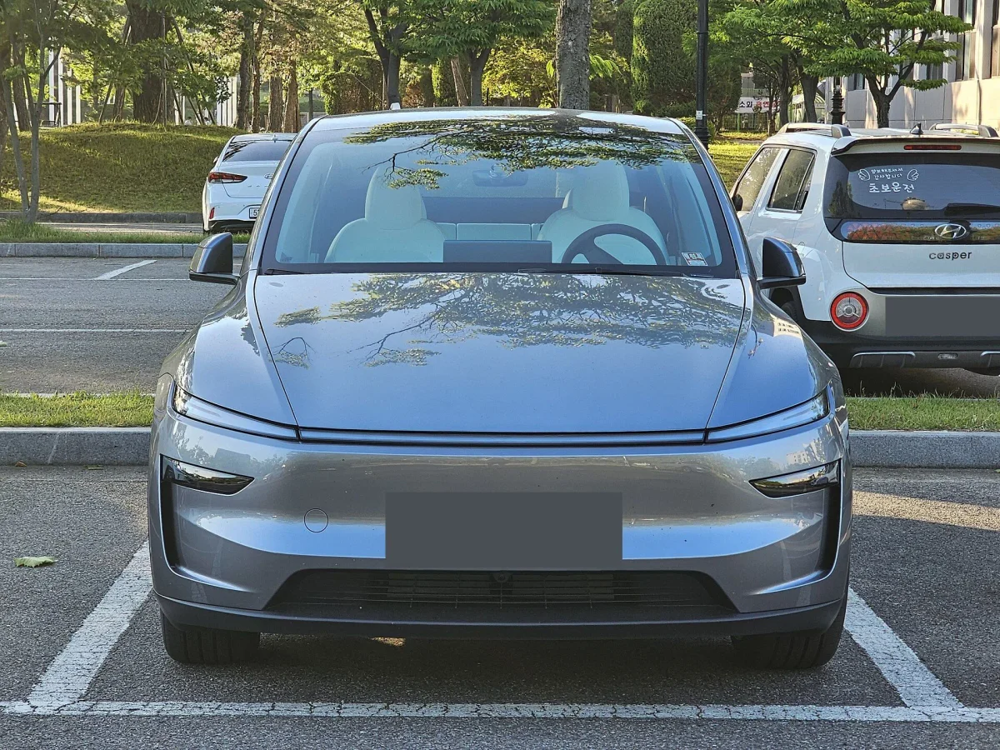
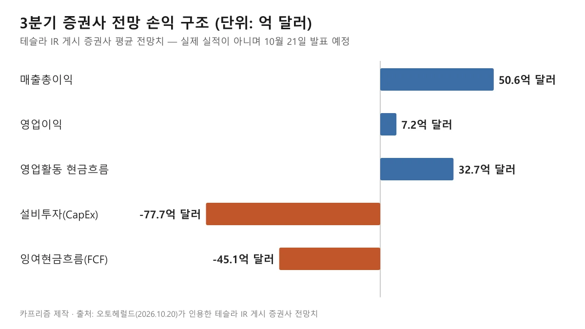
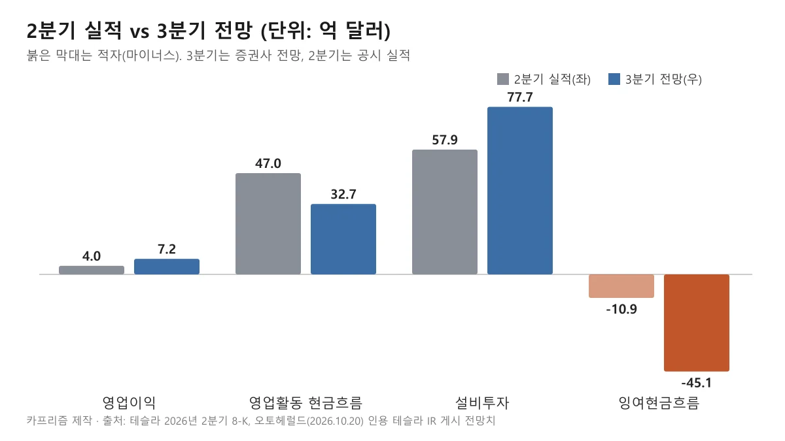
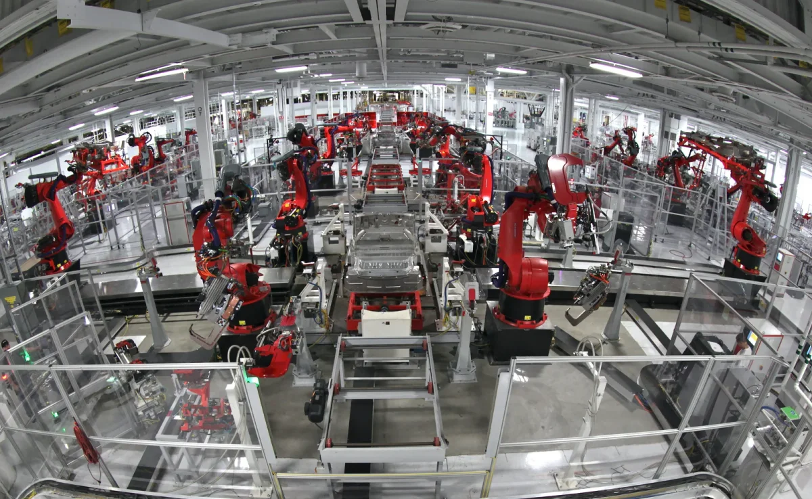
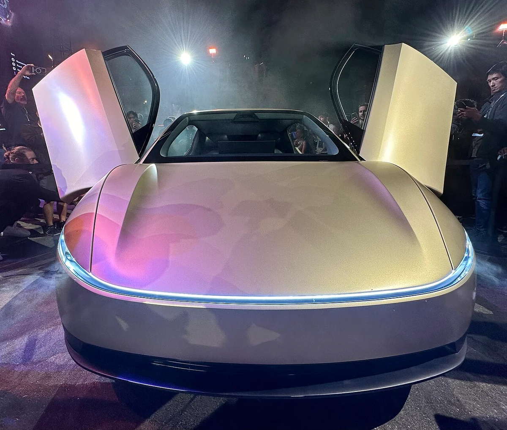
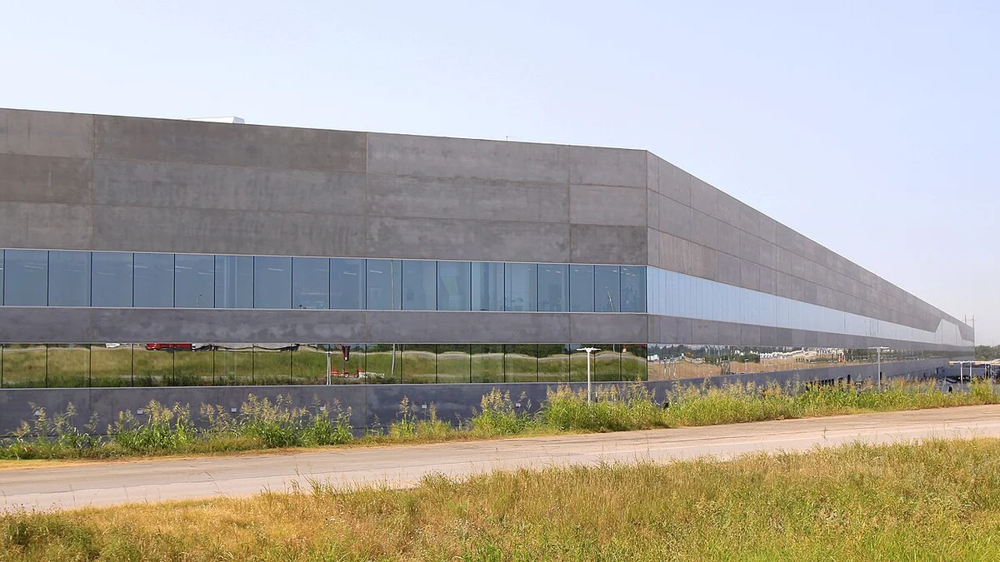
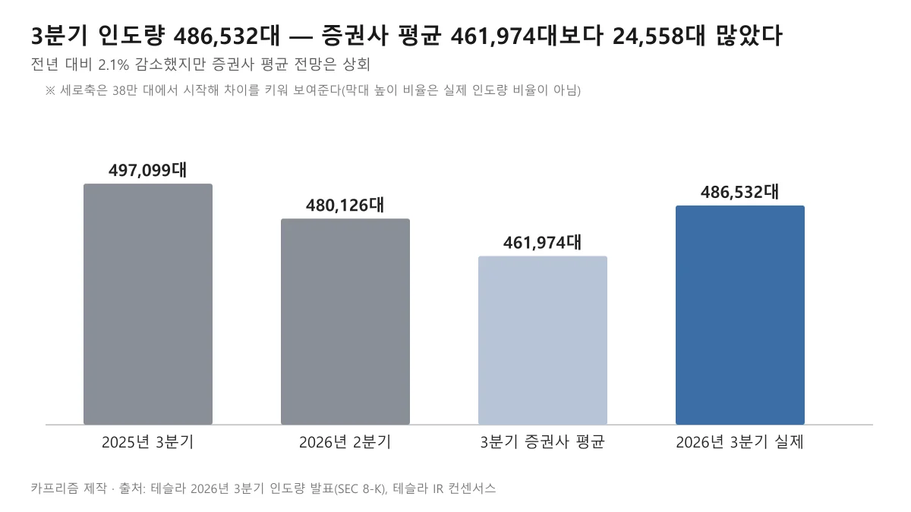
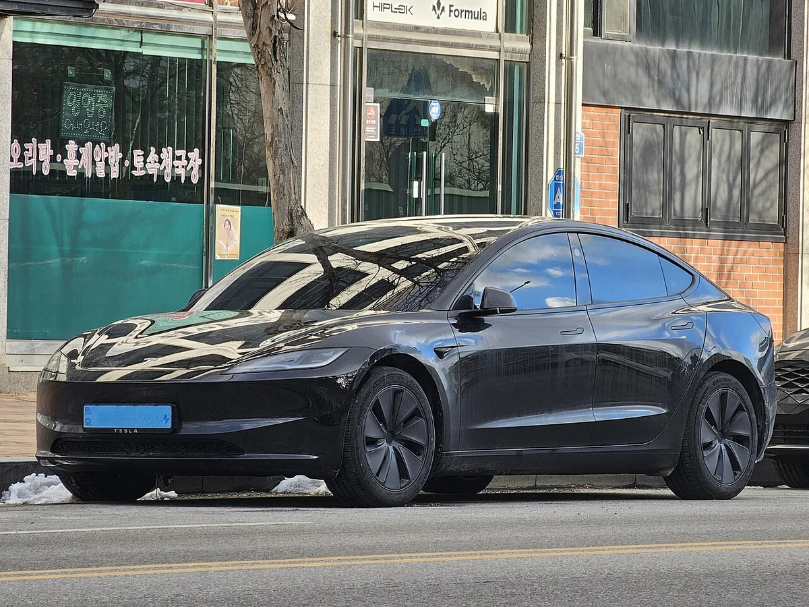

▲ 테슬라 모델 Y 듀얼 모터 퍼스트 에디션(주니퍼) 전면. 3분기 486,532대 인도의 대부분을 차지한 모델 3·Y 계열 예시이며 촬영 장소는 확인하지 않았다 ⓒ Damian B Oh / Wikimedia Commons (CC BY-SA 4.0)
"48만 대나 팔았는데 45억 달러 적자라니, 테슬라 진짜 적자 난 건가?" 이런 제목을 보면 이미 나온 3분기 성적표에서 큰 손실이 확인된 것처럼 읽힌다. 하지만 확인해 보니 이 두 숫자는 서로 다른 성격이다.
결론부터 말하면 48만 대(486,532대)는 이미 발표된 3분기 인도량이고, 45억 달러(정확히 마이너스 45억 600만 달러)는 아직 나오지 않은 3분기 잉여현금흐름의 증권사 전망치다. 3분기 실적 발표는 2026년 10월 21일 장 마감 후라서, 이 글을 쓰는 10월 20일 현재 실제 손익은 공개되지 않았다. 숫자가 무엇을 뜻하는지, 어디까지 확인되는지 짚어 본다.
이 글은 자동차 전문 매체 오토헤럴드(2026년 10월 20일 보도)가 전한 증권사 전망치를 단서로, 테슬라가 SEC에 제출한 8-K 공시와 2분기 주주 업데이트 자료로 사실관계를 대조해 정리했다. 이 글은 일반 정보이며 투자 권유가 아니다. 3분기 실적은 10월 21일 장 마감 후 발표되므로, 발표 후 실제 수치로 갱신할 예정이다. 이미 발표된 인도량은 3분기 인도량 기사에서, 2분기 이익률 하락은 2분기 실적 기사에서 자세히 다뤘으니 여기서는 반복하지 않는다.
1. 48만 대와 45억 달러, 각각 무엇의 숫자인가
제목에 함께 쓰인 두 숫자는 측정 대상도, 확정 여부도 다르다. 한 문장에 묶이면서 "팔 만큼 팔고도 큰 손실이 났다"는 인상을 주기 쉬우므로 먼저 분리해 본다.
| 숫자 | 무엇인가 | 확정 여부 | 근거 |
|---|---|---|---|
| 48만 대 | 2026년 3분기 고객 인도량 486,532대(모델 3·Y 478,237대, 기타 8,295대) | 확정(10월 2일 발표) | 테슬라 SEC 8-K, 테슬라 IR 보도자료 |
| 45억 달러 | 3분기 잉여현금흐름 증권사 평균 전망치(마이너스 45억 600만 달러) | 전망치, 미확정 | 오토헤럴드(2026.10.20) 보도 — 테슬라 IR 게시 증권사 취합 자료를 인용 |
| "적자" | 영업손익이 아니라 현금흐름 항목 | 미확정 | 같은 전망표에서 영업이익은 흑자 7억 2,100만 달러 |
이 글은 오토헤럴드 보도의 전망표를 그대로 옮긴 수치를 "(보도 기준)"으로 한정한다. 테슬라 IR 사이트(ir.tesla.com)는 접속 제한으로 직접 열어 보지 못했고, 해당 전망표 원본을 직접 대조하지는 못했다. 반면 인도량과 2분기 실적은 SEC 공시 원문으로 확인했다.
오토헤럴드 원 기사 바로가기 제목과 본문 수치는 해당 매체 보도 기준이다.
2. 실적은 언제 나오나 — 발표 전이라는 점부터 확인
테슬라는 3분기 인도량 발표문(8-K 첨부)에서 2026년 3분기 재무 결과를 10월 21일(수) 장 마감 후 발표하고, 같은 날 중부시간 오후 4시 30분(동부 5시 30분) 질의응답 웹캐스트를 연다고 알렸다. 순이익과 현금흐름은 그 실적 발표 때 공개한다고 명시돼 있고, 자세한 내용은 분기 보고서(10-Q)에 담긴다.
같은 발표문은 "인도량과 에너지 저장 배치는 분기 재무 성과를 보여주는 두 지표일 뿐 단독으로 재무 결과를 나타내지 않는다"는 취지의 주의 문구도 달았다. 인도량이 아무리 많아도 이익이 따라온다는 보장은 없다는 뜻이다. 인도량 발표 전 월가 추정이 얼마나 갈렸는지는 3분기 인도량 전망 기사에 있다.
📍 지금 확인되는 것과 확인되지 않는 것
- 확인됨: 3분기 인도량·생산량·에너지 저장 배치, 2분기까지의 공시 실적, 3분기 실적 발표 일정
- 확인 안 됨: 3분기 영업이익·순이익·잉여현금흐름의 실제 값. 모든 3분기 손익 숫자는 전망치다
- 제목 처리: 그래서 이 글은 "적자"를 단정하지 않고 "전망치"로 한정한다
3. 전망치 손익 구조 — 이익은 나는데 현금이 마이너스인 이유
오토헤럴드가 전한 테슬라 IR 게시 증권사 전망치를 한 장으로 옮기면 아래와 같다. 핵심은 영업이익은 플러스인데 설비투자가 영업활동 현금흐름보다 훨씬 크다는 점이다.

▲ 3분기 전망치는 이익과 영업현금이 플러스인데도 설비투자가 77.7억 달러라 잉여현금흐름이 마이너스다. 실제 실적이 아니라 증권사 전망이다. ⓒ 카프리즘 제작 도표
| 항목 | 전망치 | 메모 |
|---|---|---|
| 매출 | 283억 4,100만 달러 | 자동차 202억 7,200만, 에너지 37억 2,000만, 서비스·기타 43억 4,900만 달러 |
| 매출총이익 | 50억 6,100만 달러(17.9%) | — |
| 영업이익 | 7억 2,100만 달러(2.5%) | 영업손실이 아니라 흑자 전망 |
| 주당순이익(EPS) | GAAP 0.23달러, 비GAAP 0.45달러 | 순이익 총액 전망은 보도에 없음 |
| 영업활동 현금흐름 | 32억 6,700만 달러 | — |
| 설비투자 | 77억 7,100만 달러 | 2분기 57억 8,900만 달러보다 큼 |
| 잉여현금흐름 | 마이너스 45억 600만 달러 | 제목의 "45억 달러"가 이 값 |
테슬라는 2분기 주주 업데이트에서 잉여현금흐름을 "영업활동 현금흐름에서 설비투자를 뺀 값"으로 정의한다. 전망치 평균끼리 단순 뺄셈(32.67억 − 77.71억)을 하면 마이너스 45.04억 달러로 보도된 마이너스 45.06억 달러와 약간 차이가 나는데, 각 항목의 평균을 낸 증권사 집합이 조금씩 다르기 때문으로 보이며 원본은 확인하지 못했다.
연간 전망치도 같이 보도됐다. 연간 설비투자 253억 5,400만 달러, 연간 잉여현금흐름 마이너스 97억 1,700만 달러(이상 증권사 전망, 보도 기준)다. 연간 설비투자가 250억 달러를 넘을 것이라는 서술은 로이터·마켓워치 보도에도 나오지만, 2분기 8-K 첨부 문서에는 연간 설비투자의 금액 가이던스가 적혀 있지 않았다.
4. 2분기와 비교 — 이미 확정된 마이너스 10억 9,200만 달러
전망치가 틀릴 수 있어도 흐름은 2분기 실적에서 이미 보인다. 테슬라 2분기 8-K에 따르면 매출 282억 3,600만 달러, 영업이익 3억 9,800만 달러(영업이익률 1.4%, 전년 대비 57% 감소), 순이익 11억 2,800만 달러(보통주주 귀속 GAAP 순이익 11억 1,400만 달러)였다. 그런데 영업활동 현금흐름 46억 9,700만 달러에서 설비투자 57억 8,900만 달러를 빼면 잉여현금흐름은 마이너스 10억 9,200만 달러다.

▲ 2분기 실적(회색)과 3분기 전망(파랑). 3분기 전망에서 설비투자와 현금 적자 폭이 모두 커진다. ⓒ 카프리즘 제작 도표
| 항목 | 2분기 실적(공시) | 3분기 전망(보도 기준) |
|---|---|---|
| 매출 | 282.4 | 283.4 |
| 영업이익 | 4.0 | 7.2 |
| 영업활동 현금흐름 | 47.0 | 32.7 |
| 설비투자 | 57.9 | 77.7 |
| 잉여현금흐름 | -10.9 | -45.1 |
숫자가 말하는 것은 이익이 줄어서 현금이 마르는 것이 아니라, 들어오는 현금보다 투자로 나가는 돈이 빠르게 늘어나는 구조라는 점이다. 3분기 영업활동 현금흐름 전망이 2분기보다 오히려 작다는 점도 눈에 띈다. 다만 이 모든 것이 전망이므로 실제 값은 발표에서 달라질 수 있다. 2분기 이익률 하락의 원인은 2분기 실적 기사를 참고하면 된다.
5. 돈이 어디로 가나 — 공식 자료가 밝힌 AI·로보택시·옵티머스
설비투자가 늘어나는 배경은 테슬라 2분기 주주 업데이트(8-K 첨부)에 직접 적혀 있다. 다음은 그 문서에서 확인한 서술이며, 투자 규모를 항목별로 나눈 수치는 공시에 없었다.
| 분야 | 공식 자료 내용 | 확인 한계 |
|---|---|---|
| 설비투자 기조 | "가장 크고 흥미로운 투자 시기"라고 표현, 2분기 설비투자가 직전 분기보다 33억 달러 늘었다 | 연간 설비투자 금액 가이던스는 해당 문서에 없음 |
| AI 컴퓨트 | 텍사스 현장 컴퓨트를 상반기 동안 2배 넘게 늘렸고, 코르텍스 1 90MW 이상·코르텍스 2 115MW 이상. 코르텍스 2는 차량과 휴머노이드 로봇 자율주행 소프트웨어를 지원 | 컴퓨트 투자액은 별도 수치 없음 |
| 반도체 | 오스틴 반도체 팹 건설과 장비 조달 진행, 자체 칩 확보에 중요하다고 설명 | 팹 규모·일정은 테라팹 기사 참고 |
| 사이버캡·로보택시 | 사이버캡 생산 시작(기가 텍사스 설치 용량 연 12만 5,000대 이상 표기), 로보택시는 미국 7개 대도시권에서 운영, 7월에 마이애미·올랜도·탬파에서 무감독 주행을 시작하고 오스틴 무감독 운영 구역도 확대(오스틴·댈러스·휴스턴·마이애미·올랜도·탬파는 무감독 확대 단계로 표기, 샌프란시스코 베이 지역은 안전요원 탑승) | 수익성은 공시에 없음. 무감독·유감독 구분이 도시마다 다름 |
| 옵티머스 | 프리몬트 모델 S·X 라인 철거 후 옵티머스 라인 구축 시작, 1세대 생산 라인 설치 중, 초기 생산분은 훈련 데이터 수집용 "옵티머스 아카데미"에 투입 | 양산 시점은 "올해 중 예상" 수준, 판매 계획 수치 없음 |

▲ 자동화 조립 라인 예시. 촬영 연도와 공장은 확인하지 않았고, 옵티머스 라인이나 3분기 설비투자와 직접 관련된 장면이 아니다. ⓒ Steve Jurvetson / Wikimedia Commons (CC BY 2.0)

▲ 사이버캡 시제품 전면. 2024년 공개 행사 당시 차량으로 알려져 있으며, 2분기 8-K에 적힌 기가 텍사스 양산 차량의 현재 사양과 같다고 단정할 수 없다. ⓒ Steve Jurvetson / Wikimedia Commons (CC BY 2.0)
로보택시 현황은 오스틴 사이버캡 투입 기사에서 다뤘다. 이 글에서는 "AI 투자 부담"을 어디까지 말할 수 있는지만 정리한다. 공식 자료로 확인되는 것은 설비투자 증가와 AI·로봇 관련 사업의 구축 서술까지이고, 이 사업들이 언제 얼마를 벌어들이는지에 대한 수치는 공시에 없다. "AI 투자 때문에 수익성이 나빠진다"는 해석은 시장의 시각이고, 8-K가 직접 그렇게 인과를 밝힌 것은 아니다.

▲ 기가 텍사스 공장 건물 외관 예시. 2022년 6월 촬영분으로 현재 증설 상황을 보여 주는 사진이 아니며, 사이버캡 생산 라인 내부도 아니다. ⓒ Larry D. Moore / Wikimedia Commons (CC BY 4.0)
6. 팔린 대수는 예상보다 많았다 — 인도량 숫자의 위치
제목의 첫 구절 "48만 대 팔고도"는 사실이다. 486,532대는 테슬라가 취합한 증권사 평균 461,974대보다 24,558대 많았고, 전년 동기 497,099대보다는 2.1% 적었으며 2분기 480,126대보다는 소폭 많다.

▲ 3분기 인도량은 전년보다 줄었지만 증권사 평균 전망은 넘어섰다. 막대 세로축은 38만 대부터 시작한다. ⓒ 카프리즘 제작 도표
인도량이 생산량(464,391대)보다 22,141대 많았다는 점은 재고에서 판매가 이뤄졌다는 뜻이다. 이 부분의 계산은 3분기 인도량 기사에 정리했다. 즉 판매 규모 자체는 약하지 않았고, 시장의 초점은 "얼마나 팔았나"에서 "팔아서 남는 돈과 투자로 나가는 돈이 얼마나 되나"로 옮겨 가 있다.

▲ 테슬라 모델 3 하이랜드 전면 예시. 3분기 인도량 대부분을 차지한 모델 3·Y 계열의 다른 한 축이다. 촬영 장소와 시점은 확인하지 않았다. ⓒ Damian B Oh / Wikimedia Commons (CC BY-SA 4.0)
판매량과 이익이 따로 움직이는 사례는 다른 회사에도 있다. 샤오미가 누적 50만 대를 넘기면서 전기차·AI 부문 적자를 낸 사례는 샤오미 SU7 50만 대 기사에 정리했는데, 두 회사는 손실의 성격(영업손실 대 현금흐름)이 달라 그대로 비교할 수는 없다.
7. 전망치마다 숫자가 다른 이유 — 45억 달러만 맞는 수치는 아니다
잉여현금흐름 전망은 집계처마다 다르다. 같은 3분기에 대해 로이터 보도(KuCoin 전재본, 10월 19일, 출처를 "애널리스트"로만 표기)는 증권사 평균 마이너스 49억 2,000만 달러, 조정 EPS 약 0.43달러, 매출 약 278억 8,000만 달러를 전했다. 오토헤럴드가 인용한 테슬라 IR 게시 자료는 마이너스 45억 600만 달러, 비GAAP EPS 0.45달러, 매출 283억 4,100만 달러다.
| 출처 | 잉여현금흐름 | 매출 | EPS |
|---|---|---|---|
| 오토헤럴드(테슬라 IR 게시 증권사 취합 인용) | -45.06억 달러 | 283.41억 달러 | 비GAAP 0.45달러 |
| 로이터 보도(KuCoin 전재) | -49.2억 달러 | 약 278.8억 달러 | 조정 약 0.43달러 |
| Zacks 컨센서스(트레이딩키 인용) | 제시 없음 | 278억 달러 | 0.44달러 |
세 집계 모두 3분기 매출은 280억 달러 안팎으로 비슷하지만 현금흐름은 4억 달러 안팎 차이가 난다. 어느 한 숫자가 "정답"이 아니라 수십억 달러 규모의 마이너스 현금흐름이 전망된다는 방향성이 공통점이다. 실제 값은 10월 21일 실적 발표에서 확정된다.
✅ 실적 발표 때 이렇게 확인하자
· 잉여현금흐름: 영업활동 현금흐름과 설비투자 실제 값을 각각 확인해 전망치와 비교한다
· 영업이익과 순이익 구분: GAAP 순이익에는 영업 외 손익이 섞일 수 있어 영업이익을 따로 본다
· 연간 설비투자 서술: 250억 달러 이상이라는 표현이 공식 문서에서 어떻게 적히는지 확인한다
· AI·로보택시·옵티머스 서술: 일정과 투자 우선순위가 바뀌었는지 본다
· 제목에 숫자가 있으면: 실적인지 전망인지, 어느 분기인지 먼저 확인한다
8. 이 글에서 확인하지 못한 것
- 테슬라 IR 사이트(ir.tesla.com)의 전망표 원본은 접속이 제한돼 직접 확인하지 못했다. 45억 600만 달러 등 전망치는 오토헤럴드 보도에 의존한다.
- 3분기 실제 영업이익·순이익·잉여현금흐름은 발표 전이라 존재하지 않는다. 발표 후 이 기사는 정정이 필요할 수 있다.
- 연간 설비투자 250억 달러 이상은 로이터·마켓워치 보도로 확인했고, 2분기 8-K 문서에는 금액이 없었다.
- 설비투자 항목별 내역(AI 컴퓨트, 반도체 팹, 옵티머스, 사이버캡 등 각각 얼마)은 공시에서 찾지 못했다.
- 2분기 순이익의 구성(영업 외 평가이익 영향 등)은 공시 원문의 세부 항목을 열어 보지 못해 서술하지 않았다.
- 오토헤럴드 보도의 일부 표기(게재 시각 등)는 다른 매체와 달라 보일 수 있어 수치만 인용했다.
9. 요약
"48만 대 팔고도 45억 달러 적자"에서 48만 대는 이미 발표된 3분기 인도량 486,532대(SEC 8-K 확인)이고, 45억 달러는 아직 나오지 않은 3분기 잉여현금흐름 증권사 전망치(마이너스 45억 600만 달러, 오토헤럴드 2026-10-20 보도 기준)다. 영업손실이 아니라 현금흐름 항목이며, 같은 전망에서 영업이익은 7억 2,100만 달러 흑자다.
3분기 실적은 10월 21일 장 마감 후 발표된다. 2분기에는 영업이익 3억 9,800만 달러 흑자, 잉여현금흐름은 마이너스 10억 9,200만 달러(설비투자 57억 8,900만 달러)가 공시로 확정돼 있다. 3분기 설비투자 전망은 77억 7,100만 달러로, 이익이 아니라 투자 속도가 현금흐름을 끌어내리는 구조다.
공식 자료가 확인해 주는 것은 AI 컴퓨트 확대, 사이버캡 생산 시작, 로보택시 7개 도시권 운영, 옵티머스 라인 구축까지이며, 이들이 얼마를 벌지는 공시에 없다. 집계처마다 전망 현금흐름이 -45억~-49억 달러로 다르니, 실제 수치는 발표 후 확정해서 읽자. 확인하지 못한 것은 IR 전망표 원본, 항목별 투자 내역, 연간 설비투자 공식 가이던스다.